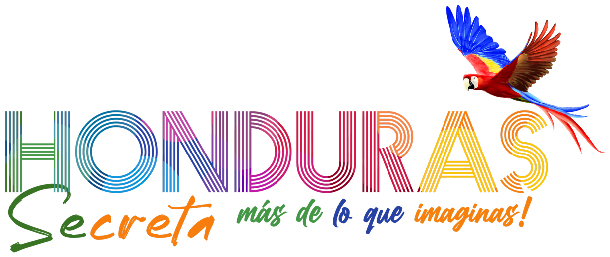
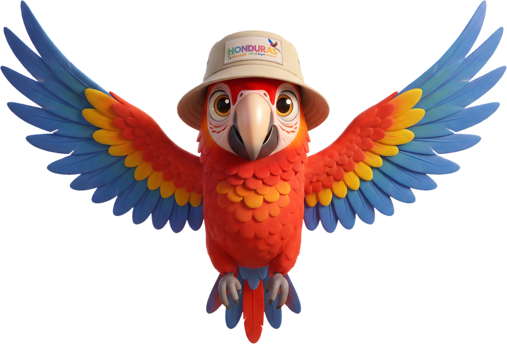
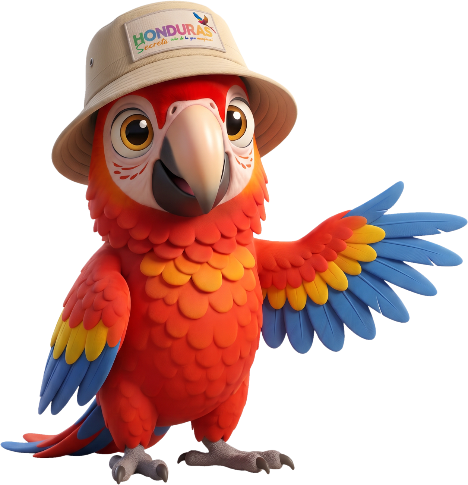
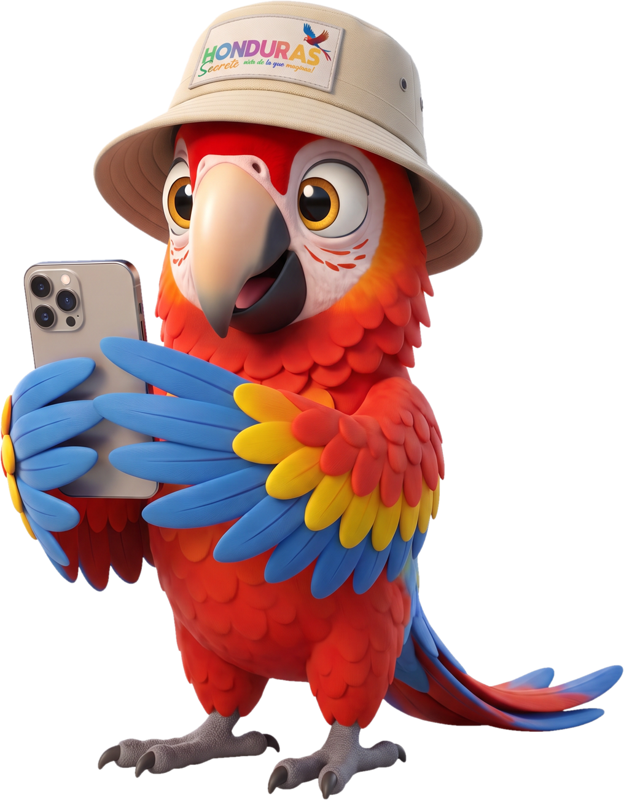
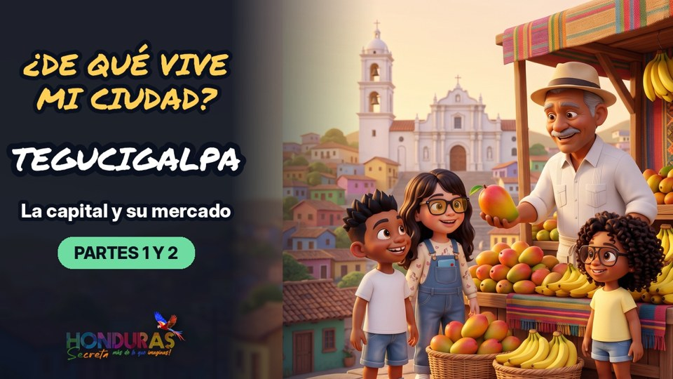
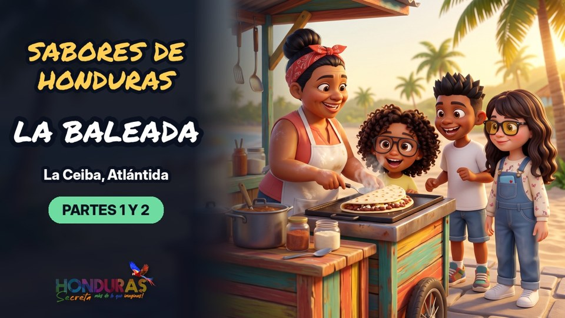
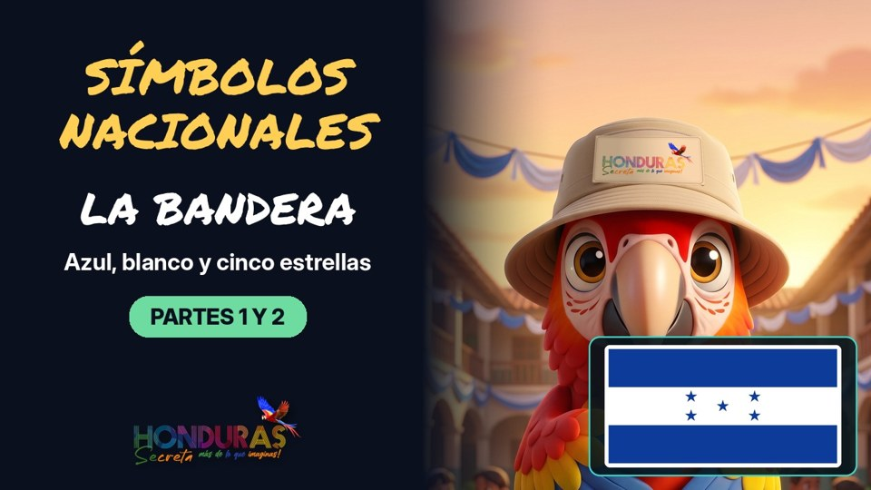
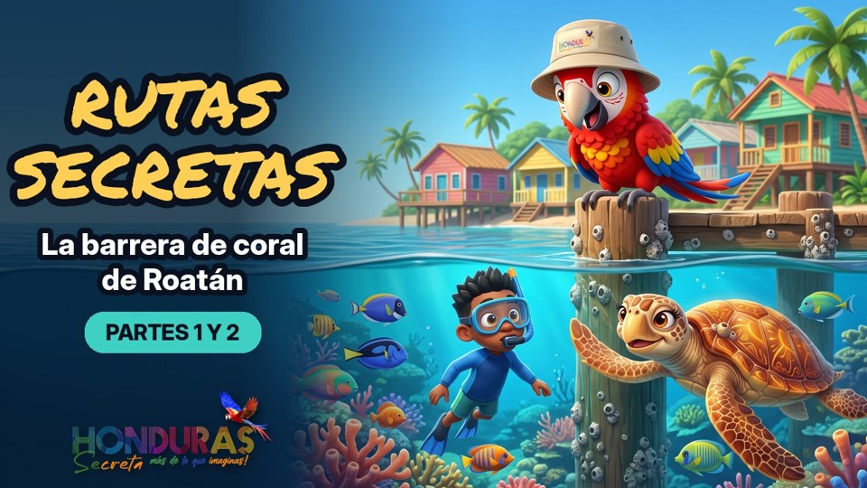

Honduras Secreta es una marca de contenido que muestra lo mejor de Honduras: sus ciudades, sabores, animales, símbolos, historia y rutas, contados con personajes animados que conectan con grandes y chicos.
Nuestra anfitriona es la guara, el ave nacional de Honduras, que acompaña a la audiencia en cada aventura junto a Kevin y otros personajes.


Casi la mitad de la audiencia vive fuera de Honduras, sobre todo en EE. UU. y España: la diáspora catracha.



